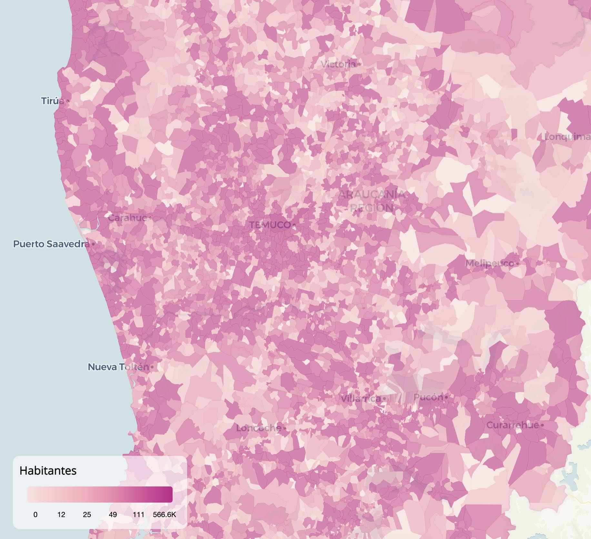

Optimizando la visualización de datos geográficos complejos con {pmtiles}
3/8/2026

Aquí vemos 29.256 polígonos con las localidades de Chile, que en total suman más de 12 millones de vértices, pero que se visualizan sin problema!
El paquete de R {pmtiles} optimiza datos geográficos complejos para visualizarlos con mucha mejor velocidad 🚀🗺️
La gracia de PMTiles es que procesa datos geográficos para que al visualizarlos se carguen solamente los polígonos necesarios, y a un nivel de detalle optimizado! Si tu mapa es demasiado complejo y colapsa tu computador o no sirve para desplegarlo en producción, {pmtiles} te sirve!
Pero lo mejor es que esto es demasiado simple con R:
Optimización y servidor de mapas con {pmtiles}
Se necesitan menos de 40 líneas para cargar las geometrías y datos en Parquet, luego optimizarlos con {pmtiles} y lanzar el servidor de mapas.
# crear pmtiles desde datos geográficos
library(arrow)
library(dplyr)
library(sf)
library(pmtiles)
library(mapgl)
# cargar mapa local en parquet
loc_aisladas <- read_parquet("datos/parquet/LOC_AIS_17.parquet") |>
select(-geometry_bbox) |>
st_as_sf() |>
st_set_crs(5360)
# crear archivo PMTiles con geometrías optimizadas
pm_create(
loc_aisladas,
"datos/localidades.pmtiles",
layer_name = "localidades",
min_zoom = 2,
max_zoom = 12,
detect_shared_borders = TRUE,
extend_zooms_if_still_dropping = TRUE,
coalesce_densest_as_needed = TRUE,
coalesce_smallest_as_needed = TRUE,
coalesce_fraction_as_needed = TRUE,
# drop_fraction_as_needed = TRUE,
# drop_smallest_as_needed = TRUE,
guess_maxzoom = TRUE,
simplification = 7
)
# levantar servidor de mapas local
pm_stop_server()
pm_serve("datos/localidades.pmtiles", port = 8080)
Visor de mapas con {mapgl}
- Menos de 40 líneas para hacer un [visor de mapas interactivo con
{mapgl}}(https://walker-data.com/mapgl/) que se alimenta del servidor de mapas para visualizar datos geográficos complejos (en los comentarios dejo ejemplos del código)
# mapa interactivo mapgl usando pmtiles
# escala de color basada en variable desde los datos
library(arrow)
library(pmtiles)
library(mapgl)
# cargar datos
loc_aisladas <- read_parquet(
"datos/parquet/LOC_AIS_17.parquet",
col_select = "HABITANTES"
)
pm_serve("datos/localidades.pmtiles", port = 8080)
escala <- interpolate_palette(
data = loc_aisladas,
column = "HABITANTES",
method = "quantile",
n = 6,
colors = c("#fde0dd", "#fa9fb5", "#c51b8a"),
na_color = "gray"
)
maplibre(center = c(-70.9, -33.5), minZoom = 4, maxZoom = 11) |>
add_pmtiles_source(
"localidades",
url = "http://localhost:8080/localidades.pmtiles"
) |>
add_fill_layer(
id = "localidades-fill",
source = "localidades",
source_layer = "localidades",
fill_color = escala$expression,
fill_opacity = 0.7,
# tooltips
tooltip = concat(
"<strong>",
get_column("NOMBRE"),
"</strong><br>",
get_column("COM_NOM"),
"<br>",
"Habitantes: ",
get_column("HABITANTES")
),
tooltip_style = tooltip_style(
background_color = "#FFFFFF",
background_opacity = .6,
border_radius = 8
)
) |>
add_continuous_legend(
legend_title = "Habitantes",
values = escala$breaks,
colors = escala$colors,
position = "bottom-left",
style = legend_style(
background_color = "#FFFFFF",
background_opacity = .6,
border_radius = 8,
padding = 8,
text_size = 9
)
)
Tanto {pmtiles} para servidores de mapas optimizados por teselas (tiles), como {mapgl} para visores de mapas interactivos, fueron desarrollados por
el gran Kyle Walker!
Publicaciones sobre mapas